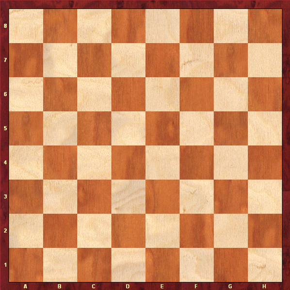
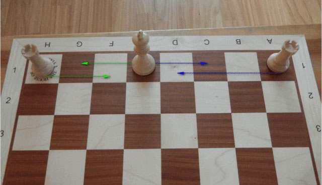
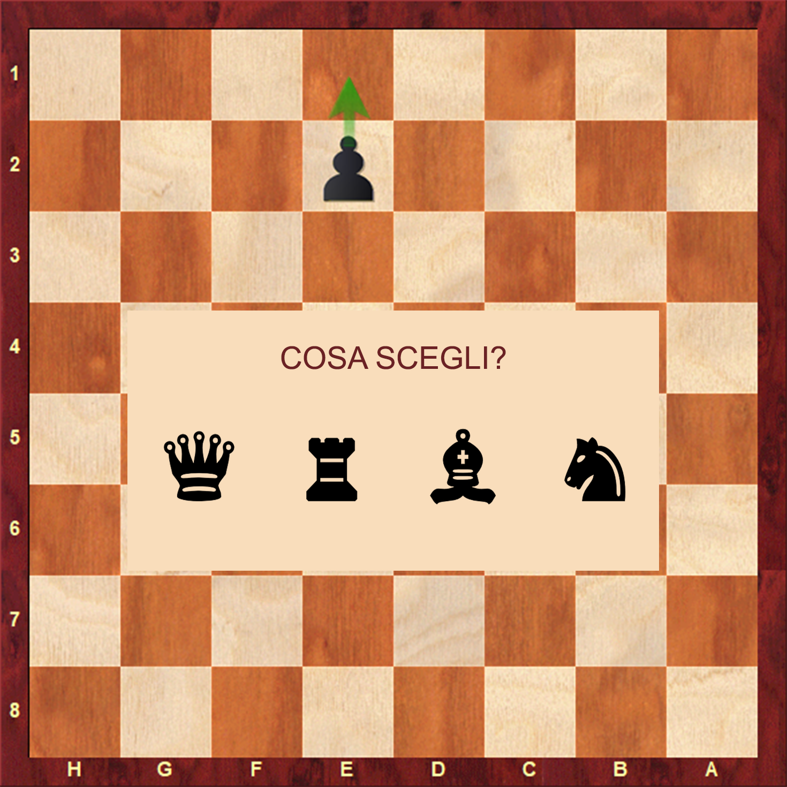
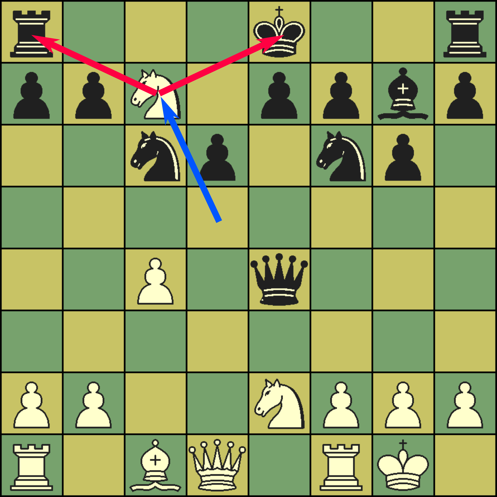
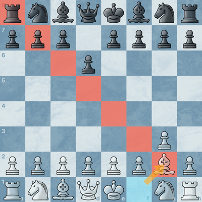
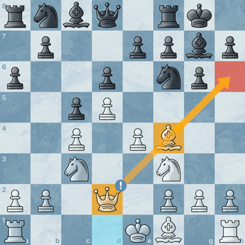

Le regole base degli scacchi
Gli scacchi si giocano su una scacchiera 8x8 con 64 caselle,ognuna numerata con una lettera (indica la colonna) ed un numero (indica la riga) che partono dalla casella in basso a sinistra del giocatore bianco, la prima casella della riga più bassa è di colore nero per entrambi i giocatori. Ogni giocatore ha 16 pezzi: 8 pedoni, 2 torri, 2 cavalli, 2 alfieri, 1 regina e 1 re.
I pezzi sono posizionati secondo il seguente orine: 2 torri nella riga più in basso ai due estremi della scacchiera, due cavalli adiacenti alle due torri, due alfieri adiacenti ai cavalli(a destra ci sarà l'alfiere campochiaro e a sinistra quello camposcuro), il re e la regina occupano le caselle centrali dell'ultima riga, con la regina che prende la casella corrispondente al suo colore(regina bianca su casella chiara, regina nera su casella scura) e infine i pedoni che occupano tutta la seconda riga circondando gli altri pezzi. Sistemati i pezzi del giocatore chiaro e di quello scuro potrete notare che la configurazione è perfettamente specchiata (a destra della pagina sono presenti immagini riguardanti i temi trattati e dei video youtube di maestri di scacchi che vi spiegheranno diverse tattiche e aperture).
Obiettivo del gioco
Mettere il re avversario sotto scacco matto, cioè fare in modo che il re non possa muoversi in nessuna casella senza essere mangiato, se il re rimane sulla sua casella può essere mangiato e nessun altro pezzo può evitare che il re venga mangiato.
Descrizione dei pezzi
Re (K): Si può muovere di una casella in ogni direzione. È il pezzo più importante, indispensabile per il gioco.
Donna (Q): tutte le caselle disponibili in linea verticale, orizzontale e diagonale. È il pezzo più forte e vale 9 punti.
Torre (R): tutte le caselle disponibili in verticale o orizzontale. È il secondo pezzo pesante, dopo la regina. Vale 5 punti.
Alfiere (B): tutte le caselle disponibili in diagonale. È il primo pezzo leggero, preferito al cavallo in posizioni aperte, vale 3 punti.
Cavallo (N): si muove a "L" ovvero di 2 caselle in verticale o orizzontale e una casella in direzione perpendicolare a quella scelta precedentemente ed è l’unico pezzo che può saltare sopra altri pezzi senza venire bloccato. È il secondo pezzo leggero, preferito all’ alfiere in posizioni chiuse, vale 3 punti.
Pedone (prende il nome dalla riga in cui si trova): avanza di una casella (o eventualmente due se la prima volta che lo si muove(è possibile farlo avanzare di una casella anche la prima volta che lo si muove)), cattura in diagonale muovendosi di una casella. Vale 1 punto ma assume molta importanza dei finali.
N.B.
il punteggio ha valore puramente indicativo per indicare il vantaggio di un giocatore rispetto al suo avversario, non vince il giocatore con il punteggio più alto.Mosse speciali
Arrocco: sposti re e torre insieme per proteggere il re e collegare le due torri. Il re si muove di due caselle in orizzontale e la torre si sposta accanto al re verso il centro.
En passant: regola speciale per catturare un pedone (con un altro pedone) appena avanzato di due caselle come se si fosse spostato solo di una casella. Vale solamente se effettuato subito dopo lo spostamento del pedone.
Promozione: se un pedone arriva in fondo alla scacchiera, viene promosso in un altro pezzo (di solito una donna in quanto pezzo più forte).
Strategie base per iniziare bene
- Controlla il centro: metti i tuoi pezzi su e4, d4, e5, d5 o fai in modo che controllino queste caselle
- Sviluppa i pezzi: porta fuori cavalli e alfieri prima di muovere la donna o torri. Evita di muovere troppo i pedoni all'inizio, soprattutto quelli laterali (Non controllano il centro e devono proteggere il re quando arrocca )
- Proteggi i pezzi: proteggi sempre i tuoi pezzi con altri pezzi, altrimenti verranno catturati facilmente .
- Proteggi il re: arrocca presto e non spostare mai il re al centro o tra i pezzi avversari. Per i giocatori comuni è consigliato muoverlo il meno possibile .
- Non sprecare mosse: evita di muovere lo stesso pezzo troppe volte (spreco di un tempo di gioco e sprecata possibilità di sviluppare altri pezzi).
Dare scacco al re avversario: costringerlo a muoversi o ad utilizzare pezzi in modo passivo per difenderlo. Allo stesso tempo un tuo pezzo è diventato molto pericoloso.
Gioca partite, fai errori, impara da ognuna. Con il tempo, tutto sarà più chiaro!
Cenni utili per giocatori più esperti
Sebbene le regole base siano ben note, vale la pena ricordare alcune particolarità spesso trascurate:
Arrocco: non è possibile se il re è sotto scacco, se il re o la torre interessati sono stati già mossi, o se passa su una casella minacciata da un pezzo avversario. Si consiglia farlo dal lato con la miglior struttura pedonale, se fatto con pedoni mossi o catturati il re sarà esposto e facilmente attaccabile. Si può arroccare in due diversi lati e l'arrocco prende il nome di arrocco lungo se fatto dal lato con la torre più lontana al re(lato di regina/queen's side) e arrocco corto se fatto con la torre più vicina(Arrocco sul lato di re/king's side). La differenza tra i due tipi di arrocco è che il primo porta la torre nella casella iniziale della regina controllando il centro a discapito di un re leggermente più scoperto, mentre il secondo è passivo e bisognerà muovere una seconda volta la torre per controllare una buona colonna Arroccare dallo stesso lato porta ad una partita più equilibrata mentre arroccare in lati differenti porta a partite più offensive con i pedoni laterali (opposti al lato in cui abbiamo arroccato(non vogliamo scoprire il re)) che avanzano mettendo pressione sul re avversario e cercano di danneggiare la sua struttura pedonale. Nonotante tutti questi tatticismi il 70% delle volte è meglio arroccare nel lato con la struttura pedonale migliore (il 30% è dato da determinate situazioni o tatticismi che solo giocatori molto forti possono trovare), non vogliamo perdere la partita
Promozione: la scelta del pezzo promosso non è legata a quelli catturati; è legale avere più regine.
Concetti strategici chiave
Aperture: se si vuole vincere bisogna studiare diverse aperture da giocare con il bianco (es. Gambetto di donna) o con il nero (es. Caro-kann) in modo da guidare la partita e far sottostare al tuo dominio l'avversario. E' possibile giocare aperture classiche, equilibrate, sistemi, molto posizionali e gambetti, offensivi e rischiosi, spesso prevedono il sacrificio di un pedone in cambio di sviluppo rapido e perdita di tempo dell'avversario
Centralizzazione: un pezzo centrale ha più mobilità e controllo.
Tempo: ogni mossa equivale ad un tempo, guadagnare un tempo (specialmente all'inizio) è un gran vantaggio in quanto consente di guadagnare un vantaggio nello sviluppo e punire l'avversario per non aver ancora sviluppato tutti i pezzi. Ogni mossa deve contribuire a un obiettivo, evitare mosse inutili (spreco di uno o più tempi di gioco) è fondamentale.
Coordinazione: i pezzi devono lavorare insieme, non in modo isolato.
Fianchetto: La maggior parte delle volte gli alfieri vengono sviluppati muovendo i pedoni centrali e spostandoli verso il centro, ma non sempre ciò accade. Nel caso di un alfiere fianchettato viene mosso il secondo pedone a partire da lato in cui si vuole fianchettare l'alfiere e si posiziona al suo posto l'alfiere posizionandolo dunque di lato, controllando la diagonale lunga e attaccando i pedoni laterali avversari. Ottimale quando l'alfiere dello stesso campo di quello che abbiamo intenzione di fianchettare è già stato catturatoe abbiamo a nostra disposizione entrambi gli alfieri in modo da poter attaccare con entrambi i pedoni laterali avversari.È altamente sconsigliato fianchettare entrambi gli alfieri e fianchettare dopo aver mosso un pedone centrale che consentiva all'alfiere di essere sviluppato prima di aver mosso il secondo pedone laterale(perdita di un tempo). Consigliato solo a giocatori più forti.
Struttura pedonale: una buona struttura dà stabilità. Evita pedoni doppiati, isolati o arretrati senza compenso,altrimenti sarà facile perderli.
Tattiche essenziali
Forchetta (Fork): tipicamente con cavallo o regina, ma possibile anche con gli altri pezzi, si attaccano più pezzi contemporaneamente e non è possibile salvarli entrambi.
Inchiodatura (Pin): spesso con l'alfiere, si impedisce ad un pezzo di muoversi quando nel caso accadesse si permetterebbe la cattura del re con il pezzo che inchioda, ottimo metodo per sbarazzarsi del difensore di una casella in quanto non è possibile spostarlo.Più forte se si tratta di inchiodatura incrociata
Scacco doppio: devastante se pianificato bene, spesso con sacrifici intermedi, muovendo un pezzo si dà scacco al re con due pezzi diversi.
Attacco di scoperta: muovere un pezzo per rivelare un attacco nascosto, spesso uno scacco di scoperta al re, che costretto a muoversi o a parare lo scacco con un altro pezzo spreca una mossa e quasi sempre permettendo la cattura di un pezzo a chi lo applica.
Interposizione (skewer): il contrario dell’inchiodatura, il pezzo che vale di più è davanti a quello di valore minore e per non essere catturato deve spostarsi, lasciando il pezzo di minor valore libero di essere catturato (molto vantaggioso se il pezzo che esegue la tattica vale meno del pezzo di cui si rende possibile la cattura).
Intrappolamento: Quando se ne presenta la possibilità, spesso grazie a delle nostre mosse di pedone è possibile intrappolare un pezzo avversario facendolo giocare con un pezzo in meno ed eventualmente quando se ne presenta la possibilità catturarlo in tutta tranquillità. L'avversario potrebbe attuare un desperado.
Desperado: Quando un nostro pezzo è intrappolato o destinato alla cattura possiamo sacrificarlo in cambio di un pezzo dal valore minore per guadagnare un minimo dalla cattura del nostro pezzo.
Sovraccarico(overload): quando si nota che un unico pezzo è alla difesa di più pezzi (difesi solo da quest'ultimo) e possiamo attaccare entrambi i suoi pezzi si può catturare uno dei due pezzi gratis, oppure catturarli entrambi a costo di perdere un nostro pezzo.
Sacrificio: sacrificare un pezzo forzando l’avversario a spostare il suo re verso il centro, indebolire la difesa del re o raggiungendo una situazione di estremo vantaggio dove è possibile arrivare alla vittoria (es. forzare scambio alfiere/torre per regina).
Principi mediogioco e finale
- Cambio vantaggioso: cambia pezzi solo se ne ricavi un beneficio concreto o se sei in vantaggio materiale, meno pezzi ci sono sulla scacchiera e più è facile attaccare quando hai più pezzi dell’avversario.
- Transizioni: preparare il passaggio apertura → mediogioco → finale mantenendo un piano e delle idee d’attacco.
- Torri collegate: è ottimale per le due torri essere sulla stessa riga/colonna senza pezzi tra loro così da proteggersi l'un l'altra e poter attaccare a pieno potenziale
- Batterie: è ottimale attaccare uno stesso pezzo o casella con più pezzi, spesso ciò avviene con batterie (spesso donna alfiere o donna torre o torre torre) dove un pezzo protegge l' altro (avviene quando i pezzi sono sulla stessa diagonale nel caso regina alfiere o nella stessa riga/colonna per regina torre e torre con torre) consentedogli di catturare o controllare una casella. Il re non può catturare un pezzo difeso da un altro pezzo altrimenti verrebbe mangiato, per questo le batterie sono molto utilizzate per dare scacco matto
- Controllo righe/colonne: per vincere una partita bisogna controllare righe e colonne strategiche con le torri/regina in modo da non consentire ai pezzi avversari di alloggiarci (es. torre in c8 nella Carokhann mainline) . Tattica fondamentale nei finali con le torri che bloccano una colonna di mezzo tra il re ed un nostro pedone impedendo al re di valicare la colonna e catturare il nostro pedone che può andare sicuramente a promozione consentendoci di vincere la partita in poche mosse
- Controllo diagonali: come per le righe e le colonne anche il controllo delle diagonali è fondamentale per dominare la partita. In partite con posizione aperte gli alfieri diventano fortissimi in quanto controllano le diagonali. La forza di un alfiere si stima in base alla diagonale che occupa, più caselle ha la diagonale(diagonale lunga) più sarà forte il tuo alfiere. Questo è il motivo per cui molti scelgono di fianchettare l' alfiere
- Finali tecnici: conoscere bene tutti i diversi tipi di finale (es. philidor endgame o finali regina vs torre) e come coordinarli per vincere.
- Scacchi matti: conoscere bene i diversi tipi di scacchi matti (es. Anastasia's mate) aiuta a creare piani di attacco e ci consente di creare o riconoscere posizioni vincenti.
- Attacco al momento giusto: punire il tuo avversario per non avere sviluppato i suoi pezzi o per aver mosso più volte lo stesso pezzo, per aver indebolito la sua difesa o per non avere abbastanza pezzi in difesa rispetto ai tuoi presenti in attacco. Si applica pressione al re/regina avversario spesso costringendolo a perdere pezzo o addirittura la partita.
- Pensare: perché un avversario ha fatto una determinata mossa e capire come contrastarla
- Regola SCAPPA: Prima di effettuare una mossa sempre pensare se c’è la possibilità di dare scacco al re avversario e se questo scacco è in qualche modo vantaggioso, o se devi spostarti in quanto sotto scacco(S), altrimenti fare lo stesso con la cattura di un pezzo(C), attacco di un pezzo o casella(A), protezione e pericoli(PP), altre mosse(A).
Migliorare richiede analisi, autocritica e studio costante. Ogni partita è un’opportunità di crescita.È normalissimo sbagliare e lasciare pezzi liberi alla cattura anche quando si conosce la teoria e si sa come evitare che questo accada, non è facile calcolare tante mosse senza sbagliare o controllare bene la scacchiera senza perdersi alcun dettaglio, specialmente quando il tempo stringe, dunque non preoccuparti, è tutta questione di allenamento. Sono molto consigliati i puzzle per migliorare il pattern recognition o la visione di gioco e giocare qualche partita rapida per velcizzare la velocità di calcolo ed il patter recognition. È importante giocare partite di scacchi 960 in cui la disposizione dei pezzi iniziale è casuale per migliorare le abilità di calcolo e trovare spesso la mossa migliore
A cura di Tursi Christian.
Immagini
|  Scacchiera |
 Scacco matto |
|  Arrocco |
|  Promozione |
|  Forchetta |
|  Fianchetto |
 En passant |
|  Batteria |
 Inchiodatura incrociata |
Video
|
Gambetto di donna |
|
Caro-kann |
|
Semislava |
|
Difesa siciliana |
|
Difesa siciliana |